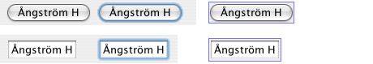

Almost all Quaqua UI delegates set the opaqueness of their component to false.
This is because many Aqua user interface elements do not entirely fill out the clip bounds of a JComponent. For example, a button under Aqua has rounded edges.
Under Aqua, a focus ring is drawn as a translucent blue ring around a user interface element. If we want to implement this with a Swing JComponent, we need to include the area covered by the focus ring in the clip bounds of the JComponent.
Another reason why we want to have larger clip bounds than the visual features of a user interface elements are that some features are not visually perceived as bounds of the components. Such as cast shadows and the outermost part of a rounded button. The Quaqua Look and Feel uses a visual margin of 3 pixel around the visually perceived bounds of a component to ensure that components align visually to each other.
The following pictures shows two Aqua user interface elements, drawn with and without a focus ring. The pictures on the right shows the clip bounds needed to accomodate all visual features of a Swing JComponent.
